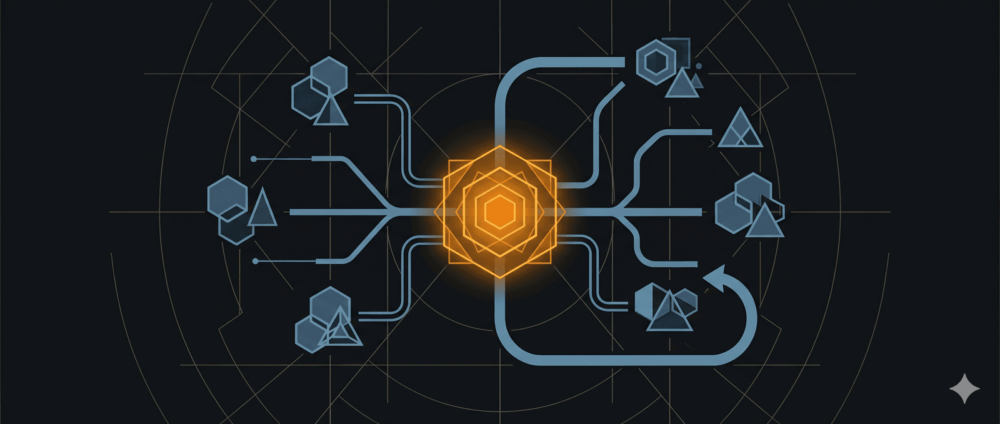

Chia sẻ quy trình Coding với AI Agents của mình đi vào năm 2026
Chào mọi người!
Mình muốn chia sẻ quy trình làm việc với các AI coding agents mà mình đang sử dụng, hy vọng mọi người có thể học hỏi được vài điều để áp dụng vào workflow của riêng mình. Và nếu workflow của bạn khác biệt đáng kể so với mình, hãy comment bên dưới nhé — mình rất muốn cải thiện quy trình của mình và nó cũng sẽ giúp ích cho những người khác nữa.
Vấn đề mình gặp phải
Khi bắt đầu dùng AI coding agents, mình nhận ra vài vấn đề khá phiền:
Thứ nhất, tạo specification tốn rất nhiều thời gian. Mỗi lần có ý tưởng mới, mình phải ngồi viết spec từ đầu, mô tả chi tiết từng tính năng — cực kỳ mất công.
Thứ hai, các coding agents có xu hướng “tự viết mọi thứ từ đầu”. Thay vì dùng một thư viện WYSIWYG editor có sẵn, nó quyết định tự code một cái. Kết quả thường tệ hơn và tốn thời gian hơn nhiều. Agents biết các package phổ biến, nhưng những thư viện ít tên tuổi hơn (chỉ vài nghìn GitHub stars) mà giải quyết vấn đề rất tốt thì nó không biết.
Thứ ba, khi không dùng planning mode, codebase dễ bị “architectural drift” — kiểu như có một version user authentication ở đây, một API pattern khác ở kia, rồi lại một cái khác nữa. Patterns không nhất quán dẫn đến review chậm hơn và agents càng ngày càng confused.
Thứ tư, khi một model mắc kẹt ở một vấn đề phức tạp, cứ đi vòng vòng không tiến triển được.
Thứ năm, sub-agents ban đầu mình dùng theo cách mọi người hay chia sẻ — gán vai trò frontend sub-agent, backend sub-agent, chạy song song — nhưng gặp đủ thứ coordination issues: các đóng góp không ăn khớp với nhau, sub-agents hiểu sai requirements, combine outputs rất phức tạp.
Giải pháp mình đang áp dụng
1. Tạo Specification nhanh với Screen Recording
Đây là một tip cực kỳ tiết kiệm thời gian. Khi có ý tưởng sản phẩm hoặc tính năng mới, rất có thể thứ tương tự đã tồn tại ở đâu đó rồi. Thay vì viết spec từ đầu, mình làm thế này:
-
Vào website có tính năng tương tự, quay màn hình
-
Vừa quay vừa nói về các ý tưởng, điểm khác biệt mình muốn, có thể dùng tool vẽ lên màn hình luôn
-
Upload video lên Gemini 3 Pro trong Google AI Studio với prompt: “Can you give me a PRD based on this particular product?”
-
Gemini trả về một PRD thô — đây là nền tảng để tiếp tục cải thiện
2. Cải thiện Spec bằng phỏng vấn tự động
Sau khi có PRD thô từ Gemini, mình chuyển sang Claude Code và dùng công cụ “ask user question” để đào sâu chi tiết. Prompt mình hay dùng:
“Read this spec file that Gemini 3 Pro gave you, interview me in detail using the ask user question tool about literally anything.”
Claude sẽ hỏi hàng loạt câu hỏi cụ thể kiểu: “Thanh công cụ định dạng nên đặt ở đâu?”, “Bàn phím emoji hoạt động thế nào?” — mình trả lời: “Add a full complete emoji picker” chẳng hạn. Quá trình này biến spec mơ hồ thành tài liệu chi tiết và sát thực tế hơn nhiều.
3. Tìm thư viện phù hợp với ChatGPT
Để giải quyết vấn đề agents hay tự viết mọi thứ từ đầu, mình đưa spec cho ChatGPT với heavy thinking bật, rồi prompt:
“Using this specification, can you search online and find any relevant GitHub packages that may be useful in developing this feature? Search online and find any well-maintained packages that seem to be updated regularly, have reliable communities, and can simplify the development of this particular feature. When there are multiple options, propose different ones with their advantages and disadvantages. They should be compatible with Next.js.”
Kết quả là một spec hoàn thiện hơn, tận dụng được các thư viện giúp tăng tốc phát triển và đảm bảo độ tin cậy. Đây là một trong hai phần hữu ích nhất trong quy trình của mình — dùng Gemini 3 Pro biến screen recording thành spec, và dùng ChatGPT tìm packages phù hợp online.
4. Chia spec thành các phases
Sau khi có spec hoàn chỉnh, mình cho Claude Code breakdown thành các phases và check off từng phần khi hoàn thành. Giữa mỗi phase, mình test ứng dụng để đảm bảo hoạt động đúng, refine spec trước khi chuyển sang phase tiếp theo. Cách này giúp sản phẩm cuối cùng align với vision của mình hơn nhiều.
Vai trò của bạn trong quy trình này là gì?
Với AI tooling ngày nay, bạn có thể xây dựng cả ứng dụng mà hầu như không viết code. Ví dụ, năm ngoái mình làm cả ứng dụng HyperWhisper mà chắc chỉ tự viết 2-3 dòng trong hàng chục nghìn dòng code. Vậy vai trò của mình là gì?
Mình thấy vai trò của mình là thiết kế feedback loop để agent có thể:
-
Hoạt động hiệu quả
-
Fail và học từ việc identify bugs
-
Cải thiện documentation nội bộ và prompts (qua skills, slash commands)
-
Cải thiện nội dung file claude.md và rule files
Cụ thể, mình quan sát agent làm việc, theo dõi reasoning của nó thường xuyên, và thiết kế môi trường để nó làm việc hiệu quả. Ví dụ, cho agent thường xuyên cập nhật file claude.md của chính nó để tránh lặp lại các lỗi đã mắc.
Đôi khi mình có ý tưởng muốn thử nhanh, mình cứ duplicate project, chơi thoải mái mà không lo về implementation hoàn hảo, rồi vứt đi nếu cần — vì code ngày nay rất “throw-away-able”.
Bạn vẫn cần đưa ra các quyết định cấp cao mà agent chưa thể tự làm:
-
Chọn database nào
-
Xác định tools và skills cần thiết trong project
-
Quyết định context nào cần truyền qua MCP servers
Ví dụ, khi triển khai hệ thống refund Stripe, bạn cần hướng dẫn agent tra cứu documentation mới nhất vì thông tin Stripe trong training data có thể đã lỗi thời.
Tóm lại, vai trò của mình là monitor agent, xem xét cách nào có thể cải thiện, những lỗi nào nó hay mắc và mình có thể làm gì về điều đó. Và cập nhật các thông tin mới nhất như sub-agents, skills, slash commands và các features mới để không bị tụt hậu. Tất nhiên, bạn phải tự trải qua các vấn đề này thì mới thực sự appreciate được các giải pháp.
Chọn Model nào cho tác vụ nào?
Đây là phần mình thấy quan trọng — mỗi model có thế mạnh riêng:
Opus 4.5 — Model chính (70-80% thời gian)
Mình dùng Opus 4.5 nhiều nhất vì nó xuất sắc ở:
-
Các tính năng lớn
-
Refactor thay đổi nhiều file
-
Viết code sạch và tập trung
Mình dùng Opus 4.5 ở đầu mọi phiên làm việc.
Sonnet 4.5 — Cho các tác vụ nhỏ
Mình chuyển sang Sonnet cho:
-
Các fix nhỏ, tinh chỉnh UI
-
Review code của người khác
-
Viết changelog đẹp và summary các thay đổi (cho release notes hoặc product updates)
GPT 5.2 — Kiến trúc và debugging
Mình dùng GPT 5.2 nhiều hơn cho các quyết định về architecture và planning. Đôi khi bắt đầu project với Opus 4.5, về sau mới nhận ra kiến trúc ban đầu không phải ý hay. Với các project lớn, mình đưa spec qua GPT 5.2 để quyết định cấu trúc.
GPT 5.2 cũng rất mạnh về debugging — khi Opus mắc kẹt ở một vấn đề phức tạp, đi vòng vòng không tiến triển hoặc fail hoàn toàn, mình chuyển sang GPT 5.2 qua Codex CLI. Mình dùng extra high reasoning effort cho các vấn đề thực sự khó, còn high reasoning effort cho việc thay đổi codebase thông thường.
Đây là xu hướng chung mình thấy nhiều người làm — khi một model không fix được vấn đề, chuyển sang model khác. Do sự khác biệt trong training data và biases, model khác có thể tìm ra giải pháp mà model đầu tiên không thể.
Gemini 3 Pro — Design và sáng tạo
Mình dùng Gemini 3 Pro cho các tác vụ liên quan đến design và creativity. Mình đã thử Gemini 3 Flash cho design nhưng không tốt bằng. Có nhiều video trên YouTube về cách dùng Gemini 3 Pro cho design rồi.
Một kỹ thuật thú vị mình thấy online: tận dụng context window lớn của Gemini 3, đưa phần lớn codebase vào để Gemini viết prompt rất chi tiết, rồi chuyển prompt đó sang Opus 4.5 để thực hiện. Mình đang muốn thử nghiệm approach này nhiều hơn trong năm nay.
Haiku 4.5 — Trả lời nhanh
Vì Haiku 4.5 phản hồi rất nhanh, mình dùng nó để:
-
Hỏi đáp nhanh về code
-
Giải thích khái niệm, dạy mình thứ gì đó mới
-
Thực hiện các edit nhanh, chính xác trong file mình đã biết cần edit ở đâu
Claude Code vs Codex CLI
Từ khi Opus 4.5 ra mắt, tỷ lệ sử dụng của mình đã chuyển từ 50/50 sang khoảng 80% Claude Code và 20% Codex CLI. Mỗi công cụ có rhythm riêng.
Codex CLI — Mạnh ở các tác vụ cần nhiều context
Cách các model Codex được train là thu thập rất nhiều context trước — có thể mất 10-15 phút chỉ để đọc code, gather files từ toàn bộ codebase, hiểu context, xây dựng mental map. Sau đó, mỗi update hoặc refactor thường rất chính xác.
Codex phù hợp cho các tác vụ chạy nền dài hơi, ví dụ: “Look at the recent errors from Sentry and then figure out what are causing those Sentry errors in the codebase.” — những task mình biết sẽ đọc nhiều code, cần hiểu sâu codebase, và ít context switching.
Claude Code — Tương tác nhiều hơn, chu kỳ ngắn hơn
Claude Code có các chu kỳ ngắn hơn, tương tác nhiều hơn. Nó “chatty” hơn, hỏi nhiều câu hỏi trước khi làm. Bạn có thể interrupt model giữa chừng, yêu cầu các tweaks và clarifications nhỏ, rồi đưa nó về đúng hướng task chính. Claude Code có cảm giác interactive hơn với rhythm khác.
Opus 4.5 khởi động nhanh, háo hức edit ngay, nhưng đôi khi bỏ qua context quan trọng mà Codex đã thu thập được từ việc đọc nhiều file hơn. Điều này làm fix của Opus 4.5 kém hiệu quả hơn, đặc biệt khi lỗi đến từ vấn đề fundamental cần mental map lớn hơn của codebase.
Mình thấy Codex giải quyết tốt hơn các lỗi liên quan đến cách codebase được architected hoặc designed từ đầu so với Opus 4.5. Nhưng tất nhiên, nếu bạn có trải nghiệm khác, hãy comment bên dưới nhé!
Chạy nhiều CLI song song
Một thứ mình đang làm là chạy nhiều CLI tools song song — ví dụ ba phiên Claude Code, hoặc hai Claude Code và hai Codex CLI, làm việc trên các tasks khác nhau trong các projects khác nhau.
Mình đã thử cho chúng làm việc trên cùng một project, nhiều features cùng lúc trong các Git worktrees khác nhau. Nhưng merge các features lại với nhau khá pain. Nên hầu hết thời gian mình có một hoặc hai project chính, cộng thêm các “satellite projects” — những ứng dụng nhỏ giải quyết pain points cá nhân. Ví dụ mình làm một Anki add-on nhỏ cho mình và vài trăm người dùng khác — một fun small project. Những pain points nhỏ mình thường biến thành sản phẩm hoặc micro application mà chỉ mình và vài người dùng.
Mình biết có người chạy 10 instances Claude Code cùng lúc. Thành thật mình không hiểu họ làm thế nào vì lượng context switching giữa các session thường khiến mình chỉ làm được 4 sessions, và sau vài giờ cảm thấy khá mệt. Mình cũng cần môi trường yên tĩnh, không thể mở nhạc, chỉ tập trung vào các sessions. Nếu ai có idea về cách thực sự sử dụng hiệu quả 10 sessions song song thì cho mình biết với.
Planning Mode: Chống Architectural Drift
Mình dùng planning mode ở đầu hầu như mọi phiên làm việc hoặc khi muốn thay đổi feature đáng kể.
Nếu không dùng planning mode, nó không có pattern tốt được thiết lập. Kết quả là bạn có một version user authentication, một API pattern, rồi một cái khác, rồi một cái khác nữa — architectural drift với patterns không nhất quán, dẫn đến review chậm hơn và agents confused hơn trong tương lai.
Khi bật planning mode, Claude Code spawn nhiều explore sub-agents tìm kiếm qua codebase để phát hiện các pattern đã được thiết lập. Dữ liệu này được chuyển cho planning sub-agent để xây dựng trên các pattern có sẵn, ngăn chặn drift.
Đây là một trong những big unlocks năm nay cho coding agents. Trước đây, người ta dùng RAG-based indexing để tìm file liên quan trong codebase rồi pass cho coding agent để xác định patterns. Nhưng hóa ra khi Claude Code dùng agentic grep — grep qua codebase với nhiều sub-agents — nó cho context retrieval tốt hơn đáng kể so với bất kỳ chiến lược RAG nào. Các creators của Claude Code đã nói về điều này trong các interviews.
Claude Code sẽ spawn explore sub-agents khi cần, nhưng nếu switch sang planning mode, bạn đảm bảo nó thực sự làm vậy.
Quy tắc của mình: bất kỳ task nào mình biết sẽ thay đổi hơn 10-15 dòng code, hầu như luôn dùng planning mode. Dù có thể mất thời gian hơn trong một số trường hợp, kết quả chính xác hơn, và mình không care lắm về thời gian vì như đã nói, mình chỉ switch focus sang CLI khác làm project khác.
Thay đổi cách Review Code
Đầu năm 2025, mình inspect từng dòng code mà coding agent viết, làm line by line check để đảm bảo trông ổn trước khi commit.
Giờ mình không còn check hầu hết các dòng nữa. Mình chỉ mở Cursor, nhìn nhanh góc trên bên phải xem bao nhiêu dòng đã thay đổi và files nào bị ảnh hưởng. Nếu “shape” của diff trông đúng, mình commit luôn.
Mình thấy rằng khi plan tốt và shape đúng, code hầu như luôn đúng. Nhưng khi shape trông sai — edit vào files mình không expect ở phần khác của codebase, hoặc thay đổi quá nhiều dòng — lúc đó mình mới xem qua code và nhận ra có gì sai với prompt hoặc plan.
Mình tự tin hơn khi dùng TRPC hoặc Prisma vì chúng type safe, có thể dựa vào shapes nhiều hơn.
Ngoài ra, mình đọc qua reasoning của agent và thêm bất kỳ thoughts nào vào file claude.md. Nếu mình nghĩ nên dùng approach khác hoặc có missed architectural design hoặc pattern, mình correct nó.
Cuối session, mình nói: “Can you update the claude.md file with X, Y, and Z?” Hoặc cho nó tạo claude.md file trong subfolder cụ thể đó. Hierarchical claude.md files là một technique khá hay.
Sử dụng Sub-agents đúng cách
Cách mình dùng sub-agents hiện tại: Research và Thinking
Mình thấy sub-agents hiệu quả hơn nhiều khi dùng để kiểm soát context. Ví dụ:
-
“Can you spin up an Opus sub-agent, a Haiku sub-agent, Sonnet sub-agent, that uses the Exa MCP server to search online to figure out how this implementation for Supabase Auth should be made.”
-
Spin up 3-4 sub-agents song song để xem codebase, tìm nguyên nhân bug từ các góc độ khác nhau
-
Có sub-agent khác search online, tìm documentation liên quan, và trả về thông tin đã được distill cho session chính thực hiện
Hầu hết sub-agents mình dùng là research và thinking trước. Chúng research online hoặc xem codebase, cố gắng figure out vấn đề từ các angles khác nhau, và được hưởng lợi từ isolated context window — tách biệt khỏi session chính ngoại trừ system prompt được pass vào.
Sau khi switch sang approach này vào khoảng tháng 9, mình dùng sub-agents hầu như mỗi ngày.
Khi nào mình vẫn dùng sub-agents để edit
Có một số trường hợp mình vẫn cho sub-agents edit:
Trường hợp 1: Khi phát hiện một lỗi trong một project mà mình biết lỗi đó tồn tại ở nhiều projects khác trên máy (vì chúng derive từ cùng một template). Mình spawn nhiều sub-agents để tìm các projects đó và có một sub-agent cho mỗi project để fix. Điều này ổn vì đây là fix nhỏ, well-defined, và không có nhiều sub-agents chạy trong cùng một project.
Trường hợp 2: Cho chạy song song các edits nhỏ trong một project. Ví dụ, khi quyết định thêm i18n và translations vào project, có thể có 500-1000 hard-coded strings trong toàn bộ codebase. Mình lên plan và cho các sub-agents parallelize — xem qua project và làm các edits rất nhỏ extract hard coded strings vào i18n files.
Nguyên tắc chung: Tránh để nhiều sub-agents thực hiện large edits trong cùng một project vì mình biết các thay đổi sẽ ko đồng bộ với nhau.
Dictation và Session Forking
Dictation thay vì typing
Ngày nay mình dictate hầu hết mọi prompt. Mình rất hiếm khi tự gõ prompts nữa. Mình dùng tool của mình là HyperWhisper với model Parakeet version 2 — một offline model nên hoàn toàn an toàn, data không lên cloud.
Trong Claude Code, mình chỉ cần nhấn shortcut và nói: “Can you list all the features that I have in this application?” Nhấn stop. Và thường trong dưới 1 giây, nó đã viết ra mọi thứ mình nói. Đôi khi dictate hơn 2 phút, nó viết ra trong dưới 2 giây.
Fork session để học hỏi
Một tip nhỏ tiện lợi: khi mình thấy agent làm điều gì đó crazy hoặc thú vị và tự hỏi tại sao nó chọn approach đó, mình fork session để không làm nhiễu session chính.
Cách làm: split pane trong Warp (terminal mình dùng), rồi chạy claude --continue --fork. Nó sẽ load session cuối cùng vào một session mới với ID riêng. Mọi edit trong forked session không ảnh hưởng session gốc.
Trong forked session, mình hỏi bất kỳ câu hỏi nào: “Okay, why did you choose that? Why did you go for that approach?” Session chính tiếp tục không bị gián đoạn, và mình không thêm random explanations vào session chính.
Đôi khi mình cho nó search online, tìm thông tin liên quan, vẽ mermaid diagrams, và cải thiện understanding về những gì nó đang làm — vì mình thích học những thứ đó.
Mình cũng có thể switch sang model yếu hơn (như Sonnet) trong forked session để hỏi các câu hỏi, tiết kiệm hơn.
Kết luận
Đó là quy trình coding với AI agents của mình đi vào năm 2026. Tóm lại những điểm then chốt:
-
Tạo spec nhanh với screen recording + Gemini 3 Pro, cải thiện bằng Claude Code ask user question tool, và tìm packages với ChatGPT
-
Chọn đúng model cho đúng tác vụ — Opus 4.5 cho feature lớn, Sonnet cho fix nhỏ, GPT 5.2 cho architecture và debugging, Gemini 3 Pro cho design, Haiku cho quick answers
-
Dùng planning mode để tránh architectural drift
-
Review theo shape của diff thay vì line by line
-
Dùng sub-agents cho research thay vì parallel editing
-
Dictate prompts và fork sessions để học hỏi
Vai trò của bạn chuyển từ người viết code sang người thiết kế feedback loop và đưa ra quyết định kiến trúc cấp cao.
Nếu workflow của bạn khác biệt đáng kể, hãy chia sẻ bên dưới nhé .
🔍 Phân tích bài viết
📌 Tóm tắt ý chính
Bài chia sẻ workflow thực chiến của một developer Việt Nam dùng AI coding agents vào năm 2026. Cốt lõi là hệ thống 5 lớp: tạo spec nhanh từ screen recording → phỏng vấn chi tiết với Claude → tìm thư viện với ChatGPT → planning mode chống drift → review theo “shape of diff” thay vì từng dòng. Vai trò người dùng không còn là viết code mà là thiết kế feedback loop và đưa ra quyết định kiến trúc cấp cao. Sub-agents được dùng chủ yếu cho research, không phải parallel editing. Dictation và session forking là hai kỹ thuật năng suất đáng chú ý.
🗺️ Mindmap
💡 Insight & Góc nhìn đa chiều
Sự phân kỳ model đang xảy ra nhanh hơn nhiều người nghĩ. Bài viết tiết lộ một thực tế quan trọng: không có “AI tốt nhất” — mỗi model có niche riêng (Opus = feature lớn, GPT 5.2 = architecture, Gemini = design, Haiku = tốc độ). Điều này có nghĩa là người dùng thành thạo AI sẽ cần năng lực “điều phối đa model” — một meta-skill hoàn toàn mới.
“Shape of diff” review là dấu hiệu của sự chuyển dịch niềm tin. Từ kiểm tra từng dòng (năm 2025) sang chỉ xem hình dạng thay đổi (năm 2026) phản ánh developer đang chuyển từ “tôi hiểu mọi dòng code” sang “tôi tin vào hệ thống và type safety.” Đây là tư duy tương tự khi ta không đọc từng dòng của thư viện bên thứ ba.
Paradox năng suất: Tác giả thừa nhận chỉ chạy được 4 sessions song song trước khi bị kiệt sức cognitive — dù về lý thuyết AI có thể chạy 10+ sessions. Bottleneck thật sự không phải token hay compute mà là khả năng context-switching của con người. Điều này gợi ý giới hạn của cách tiếp cận “nhiều agent = nhiều hơn.”
Specification là vũ khí cạnh tranh mới. Khả năng biến ý tưởng mờ thành PRD chi tiết (screen recording → Gemini → Claude interview loop) là kỹ năng tách biệt người dùng AI thành thạo với người dùng bình thường. Spec tốt → agent ít drift → code tốt hơn. Đây là lợi thế phi kỹ thuật.
⚖️ Phản biện
Workflow này có chi phí ẩn rất cao. Tác giả dùng ít nhất 5 model/công cụ khác nhau (Gemini 3 Pro, Claude Code, ChatGPT, Codex CLI, HyperWhisper) với subscription phí riêng. Với người dùng cá nhân hoặc startup nhỏ ở VN, tổng chi phí có thể vượt $100-200/tháng — không phải ai cũng có khả năng tái tạo workflow này.
“Planning mode giải quyết architectural drift” là oversimplification. Drift không chỉ đến từ thiếu planning — nó đến từ requirements thay đổi, technical debt tích lũy, và context window giới hạn. Một codebase đủ lớn và phức tạp sẽ vẫn drift dù có planning mode, đặc biệt khi team phát triển lớn hơn.
Bias về stack cụ thể. Toàn bộ workflow được xây dựng quanh Next.js + TRPC + Prisma + Supabase. Người dùng Python, Rust, Java, hay mobile dev sẽ không thể áp dụng trực tiếp nhiều phần, đặc biệt phần “dựa vào type safety để review shape of diff.”
Vấn đề với việc giao quyết định kiến trúc cho AI. Bài khuyến khích dùng GPT 5.2 cho các quyết định architecture. Nhưng kiến trúc tốt đòi hỏi hiểu sâu domain logic, non-functional requirements, và constraints dài hạn — những thứ model không có trừ khi được cung cấp đầy đủ context. “AI architect” mà không có human oversight mạnh là rủi ro thực sự.
❓ Câu hỏi mở
Khi AI đảm nhận >95% việc viết code, liệu khả năng đọc và debug code thủ công của developer có bị atrophy nghiêm trọng không — và điều đó có tạo ra rủi ro hệ thống khi AI “fail” ở production?
“Shape of diff” review giả định rằng type system và tests đủ mạnh để bắt lỗi logic. Nhưng với những project thiếu coverage, liệu cách review này có tạo ra accumulation of silent bugs mà chỉ xuất hiện ở edge cases hay không?
Nếu mỗi developer giỏi đều chạy 4 sessions song song, thì một developer = 4 developer cũ. Thị trường lao động developer sẽ hấp thu thặng dư năng suất này như thế nào — bằng cách giảm headcount hay bằng cách mở rộng scope của những gì được xây dựng?
🇻🇳 Liên hệ Việt Nam
Cơ hội cho indie developer VN: Workflow này đặc biệt phù hợp với solo developer hoặc team nhỏ — mô hình phổ biến ở VN. Một người với laptop và $50-100/tháng subscription có thể build sản phẩm với năng suất của team 3-4 người trước đây. Đây là leveling the playing field đáng kể so với các công ty lớn.
Rào cản ngôn ngữ: Phần lớn workflow dựa vào prompt tiếng Anh (Gemini PRD, ChatGPT package research). Developer VN không thành thạo tiếng Anh kỹ thuật sẽ gặp khó khăn hơn, củng cố thêm khoảng cách năng suất giữa “tier 1” và “tier 2” developer VN.
Thị trường lao động IT VN: Nếu workflow này phổ biến, demand cho junior developer viết boilerplate code sẽ giảm nhanh. Nhưng demand cho người có thể thiết kế hệ thống, viết spec tốt, và quản lý AI agents sẽ tăng — đây là kỹ năng khó đào tạo hàng loạt qua trường lớp truyền thống.
Ngành gia công phần mềm: Các công ty outsource VN cạnh tranh bằng giá nhân công rẻ sẽ phải tái định vị. Khi AI giảm chi phí code 80-90%, lợi thế cạnh tranh sẽ chuyển sang: domain expertise, quality assurance, và khả năng dịch business requirements thành AI-ready specifications.
📖 Giải thích thuật ngữ
- Architectural drift: Hiện tượng codebase dần mất nhất quán — giống như một căn nhà được nhiều người sửa chữa khác nhau, mỗi người dùng vật liệu và phong cách khác nhau, kết quả là ngôi nhà trở nên lộn xộn và khó bảo trì.
- Planning mode: Chế độ trong Claude Code khi agent “suy nghĩ trước khi làm” — spawn nhiều sub-agents đọc toàn bộ codebase, hiểu context, rồi mới đưa ra plan. Giống như đọc bản đồ trước khi lái xe thay vì vừa lái vừa đoán đường.
- Shape of diff: Hình dạng tổng thể của các thay đổi code — bao nhiêu file bị ảnh hưởng, bao nhiêu dòng thêm/xóa, pattern tổng thể — mà không đọc từng dòng chi tiết. Như nhìn bao quát bản thiết kế khuôn để xem “trông có đúng không” trước khi đọc từng kích thước.
- Context window: Lượng thông tin tối đa AI có thể “nhớ” trong một lần xử lý. Như RAM máy tính — đầy thì bắt đầu quên thông tin cũ.
- Git worktree: Kỹ thuật cho phép làm việc trên nhiều nhánh code song song trong cùng một repository mà không cần copy thư mục. Như làm việc trên nhiều bản vẽ của cùng một sản phẩm mà không cần in ra nhiều bản vật lý.
- MCP server (Model Context Protocol): Chuẩn kết nối để AI có thể giao tiếp với công cụ bên ngoài (database, web search, files). Như cổng kết nối tiêu chuẩn giữa máy CNC và phần mềm CAM.
- RAG (Retrieval-Augmented Generation): Kỹ thuật cho AI “tra cứu” tài liệu liên quan trước khi trả lời. Như tra sổ tay kỹ thuật trước khi gia công thay vì chỉ dựa vào trí nhớ.